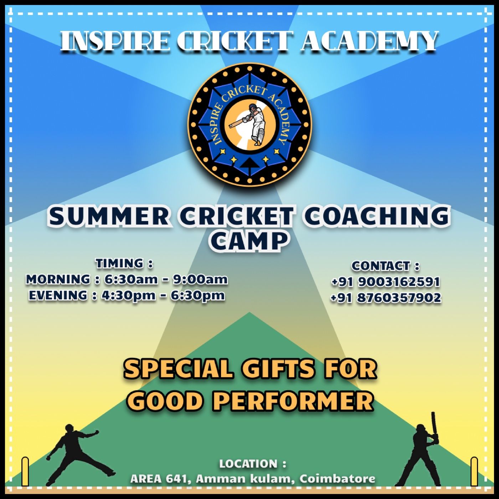

Inspire Cricket Academy
A crest identity for a youth cricket coaching academy in Coimbatore, 2022.
Inspire Cricket Academy coaches young cricketers aged 8–16. The brief, as I framed it for myself: this is the coaching program that turns raw enthusiasm into real technique — through a pathway, not a drop-in — and the mark needed to read as established and a little ceremonial, not like a weekend camp logo.
The mark
A dotted outer ring holds an eight-point navy shield in a gold outline, with a batter mid-shot at the centre — the crest format borrows from cricket club badges and school-team patches, which was the point: it should feel like it's been around a few seasons.
In the wild
The crest applied to real marketing collateral the following year — a summer coaching camp poster, timings and contact details included, sent out to actual sign-ups.
